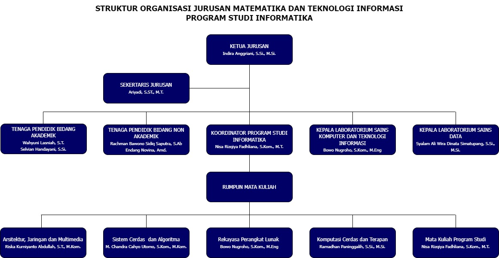

Profil INFORMATIKA
Visi
Menjadi program studi unggul di bidang Informatika yang inovatif dan kreatif dalam poros Kalimantan pada tahun 2025
Misi
- Menyelenggarakan sistem pendidikan yang efektif, efisien, dan berkelanjutan dalam rangka menghasilkan lulusan sarjana Informatika
- Menghasilkan lulusan yang memiliki kompetensi di bidang Informatika, berjiwa wirausaha (entrepreneur) dan dapat berperan positif di tingkat nasional dan internasional (world class)
- Meningkatkan kontribusi dan kolaborasi dengan berbagai pihak dalam masyarakat dengan mengembangkan produk dan layanan dalam bidang Informatika di tingkat regional, nasional maupun internasional
Tujuan
- Menghasilkan lulusan yang memiliki kompetensi di bidang Informatika, berjiwa wirausaha (entrepreneur) dan dapat dipercaya sehingga mampu bekerja sama dan memberikan kontribusi di tingkat nasional dan internasional (world class), melalui kurikulum yang disusun dengan mempertimbangkan model kurikulum Informatika pada tingkat nasional dan internasional.
- Menjalankan sistem pendidikan dengan penjaminan mutu sesuai standar nasional dan internasional.
- Melibatkan civitas academica Prodi Informatika dalam penelitian yang dapat memperkaya keilmuan di bidang komputasi dalam rangka mengisi dan menunjang pembangunan regional maupun nasional.
- Melibatkan civitas academica Prodi Informatika dalam pengabdian masyarakat dalam bentuk pembinaan, bimbingan dan konsultasi dalam rangka meningkatkan peran serta masyarakat dalam pembangunan potensi.
- Meningkatkan kontribusi dan kolaborasi dengan berbagai pihak dalam masyarakat dengan mengembangkan produk dan layanan hasil inovasi dan kreasi dalam bidang Informatika di tingkat regional, nasional maupun internasional.
- Mengembangkan sertifikasi kompetensi di bidang Informatika di tingkat regional, nasional maupun internasional.
Struktur Organisasi
